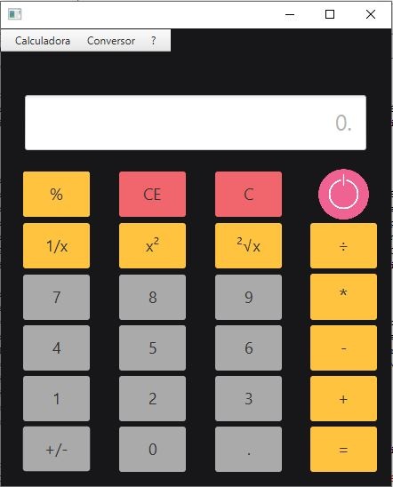
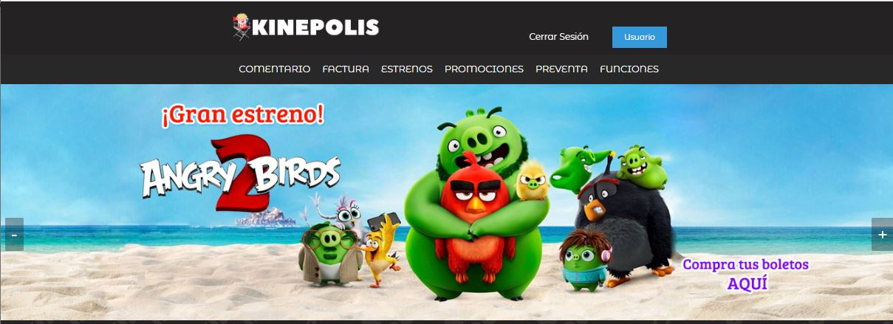

Portafolio Personal
Información de Contacto:
¡Hola! Si deseas ponerte en contacto conmigo, puedes hacerlo a través de los siguientes medios:
Correo: jjimenez-2022152@kinal.edu.gt
Teléfono: (+502) 5424-7525
Horarios de atencion: Lunes a viernes de 8am a 6pm
Ubicacion: Amatitlan, Guatemala
Trabajos:
A continuación, se mostrarán algunos de los trabajos realizados por mí, junto con una breve descripción de su contenido y un enlace para descargarlos.
Great 5 Musicians
Este trabajo trata sobre una página web que utiliza HTML y CSS. La finalidad de la página es presentar a los cinco artistas más destacados de la historia. En ella, proporcionaremos información detallada sobre cada uno de ellos, acompañada de una playlist con su música correspondiente
Calculadora Grafica
Este proyecto es una calculadora básica con interfaz gráfica, fácil de comprender. Incluye las operaciones convencionales de cualquier calculadora estándar, pero con la comodidad de una interfaz gráfica en lugar de depender solo de la consola.
Descargar Calculadora Grafica
KiCine
Este proyecto, desarrollado en JavaEE, se centra en la gestión integral de un cine. Incluye una base de datos y un sistema de login completamente funcional. La aplicación permite la administración eficiente de diversas funciones relacionadas con la gestión de un cine, ofreciendo una experiencia completa y robusta

Descargar KiCine
Tony´s Kinal
Este fue un proyecto realizado en Java, donde aplicamos conocimientos en CSS y lógica de Java. Además, hicimos uso de una base de datos relacionada con elfin de almacenar todos los datos. A nivel gráfico, el programa tenía la temática de Alquifiestas.
Descargar Tony's
Mis habilidades:
Tengo conocimientos en varios lenguajes de programación, especialmente en MySQL, Java, HTML y CSS. Además, poseo habilidades computacionales y conocimientos en el ámbito de redes.